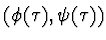

Differential equations admitting the basic forms of analytical representation of the solutions in a class of polynomial functions are considered. Invariants of continuous and discrete groups of transformations are resulted. New methods of synthesis of differential equations with a priori symmetry are considered. The methods of invariant synthesis of ordinary differential equations are based on engineering of representation of integrated manifold above a differential ring of polynomials. Differentiating basic manifold some times, we'll get "differential bush" of equations of the senior orders connected among themselves.
The problems of synthesis in doing so are formulated as follows: construct a system ODE with a priori symmetry properties on a given pair of functions

of a determined structure.Examples of systems of differential equations of the superior orders are given.